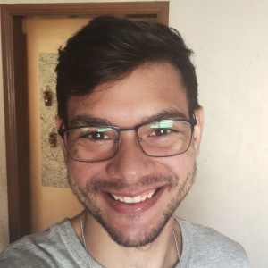

21 anos, natural de Franca/SP
Não pense separadamente nesta e na próxima vida,
pois uma dá para a outra a partida...
O tempo é sempre curto demais para quem precisa dele,
só que para os amantes ele dura pra sempre."
Rumi (poeta do séc. XIII)
Sou um jovem, em busca do seu lugar no mundo. Tenho 21 anos, e estou a procura de novas experiências.
Comecei a ter interesse em T.I, há pouco tempo. Confesso que queria ter feito Eng. Mecânica ou Aeronáutica, mas infelizmente não pude.
Penso futuramente fazer outra faculdade. Física é uma das opções ou, eu tente uma das engenharias citadas acima